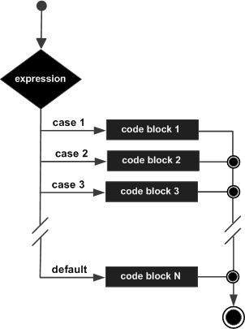

JavaScript - Switch Case
You can use multiple if...else…if statements, as in the previous chapter, to perform a multiway branch. However, this is not always the best solution, especially when all of the branches depend on the value of a single variable.
Starting with JavaScript 1.2, you can use a switch statement which handles exactly this situation, and it does so more efficiently than repeated if...else if statements.
Flow Chart
The following flow chart explains a switch-case statement works.
Syntax
The objective of a switch statement is to give an expression to evaluate and several different statements to execute based on the value of the expression. The interpreter checks each case against the value of the expression until a match is found. If nothing matches, a default condition will be used.
switch (expression)
{
case condition 1: statement(s)
break;
case condition 2: statement(s)
break;
...
case condition n: statement(s)
break;
default: statement(s)
}
The break statements indicate the end of a particular case. If they were omitted, the interpreter would continue executing each statement in each of the following cases.
We will explain break statement in Loop Control chapter.
Example
Try the following example to implement switch-case statement.
<html>
<body>
<script type="text/javascript">
<!--
var grade='A';
document.write("Entering switch block<br />");
switch (grade)
{
case 'A': document.write("Good job<br />");
break;
case 'B': document.write("Pretty good<br />");
break;
case 'C': document.write("Passed<br />");
break;
case 'D': document.write("Not so good<br />");
break;
case 'F': document.write("Failed<br />");
break;
default: document.write("Unknown grade<br />")
}
document.write("Exiting switch block");
//-->
</script>
<p>Set the variable to different value and then try...</p>
</body>
</html>
Output
Entering switch block Good job Exiting switch block Set the variable to different value and then try...
Break statements play a major role in switch-case statements. Try the following code that uses switch-case statement without any break statement.
<html>
<body>
<script type="text/javascript">
<!--
var grade='A';
document.write("Entering switch block<br />");
switch (grade)
{
case 'A': document.write("Good job<br />");
case 'B': document.write("Pretty good<br />");
case 'C': document.write("Passed<br />");
case 'D': document.write("Not so good<br />");
case 'F': document.write("Failed<br />");
default: document.write("Unknown grade<br />")
}
document.write("Exiting switch block");
//-->
</script>
<p>Set the variable to different value and then try...</p>
</body>
</html>
Output
Entering switch block Good job Pretty good Passed Not so good Failed Unknown grade Exiting switch block Set the variable to different value and then try...